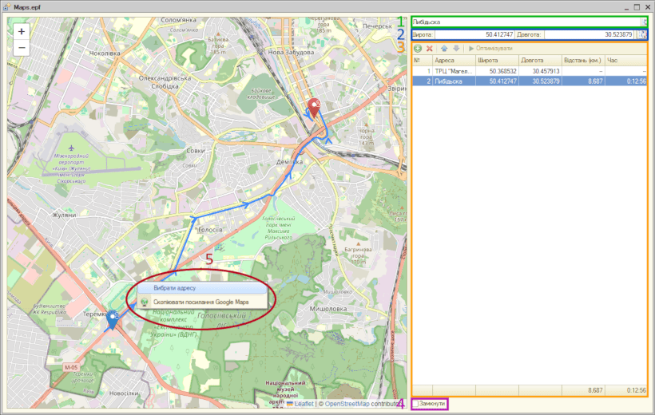

Кнопка "Оптимізувати" міняє порядок шляхових точок таким чином, що в результаті підсумок відстані буде мінімальна.Перша точка маршруту не буде зрушена з місця, якщо не активовано замикання, остання точка також не буде зрушена.